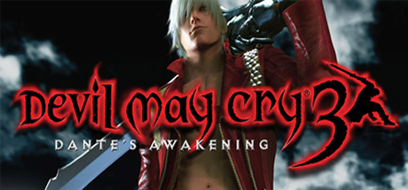
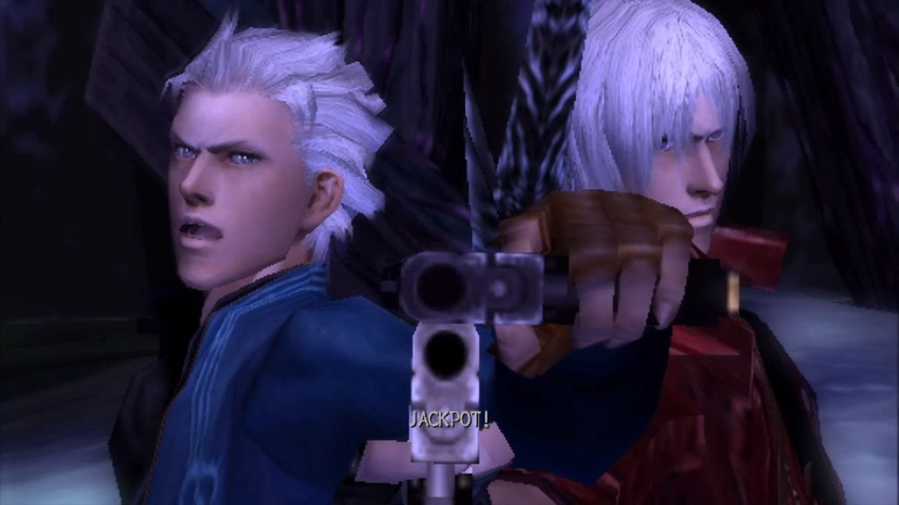

Devil May Cry 3: Dante's Awakening, editado no Japão como Devil May Cry 3(デビル メイ クライ 3, Debiru Mei Kurai Surī), é um videojogo de ação-aventura do género hack and slashproduzido e publicado pela Capcom em 2005 para PlayStation 2 (adaptado para Microsoft Windows em 2006). Terceiro da série Devil May Cry, o jogo mantém os elementos dos dois jogos anteriores e expande o sistema de combate acrescentando múltiplos estilos de luta. A história é contada principalmente através de uma mistura de cutscenesusando o motor de jogo com vários vídeos pré-renderizados.
O jogo passa-se 10 anos antes dos acontecimentos do primeiro Devil May Cry com um Dante mais novo, numa torre encantada de nome Temen-ni-gru. A história centra-se na relação disfuncional de Dante com o seu irmão gémeo Vergil. Os eventos acontecem na altura em que Dante tinha aberto a sua agência de caçador de demónios, e antes de herança demoníaca de Dante atingir todo o seu potencial. Na altura do seu lançamento, Devil May Cry 3 foi muito criticado pelo seu elevado nível de dificuldade, mas muito elogiado por ter melhorado em relação ao seu antecessor, e o regresso da jogabilidade desafiante, típica da série Devil May Cry.
Devil May Cry 3 foi um sucesso comercial, tornando-se no oitavo jogo mais vendido no Japão na primeira semana de lançamento. Foi relançado em 2006 como Devil May Cry 3: Special Edition com a dificuldade reequilibrada e com a possibilidade de jogar com Vergil. Ambas as versões combinadas venderam mais de dois milhões de cópias. Um mangá que serve como prólogo e com o mesmo nome do jogo foi publicada em 2005.

Dante batalha para pegar o caminho de volta até a torre e, eventualmente, Lady luta com ele, para perseguir Arkham. Dante derrota Lady, e esta lhe empresta sua arma mais poderosa, a Kalina Ann. Chegando ao cume da torre mais uma vez, Dante atravessa o mundo demoníaco, e enfrenta Arkham, agora na forma demoníaca de Sparda. Oprimido pelo poder gigantesco, Arkham transforma-se em uma criatura monstruosa.
No meio da luta, aparece Vergil, e os irmãos lutam juntos para derrotar Arkham. Arkham é jogado para fora do mundo demoníaco em um estado enfraquecido, caindo do topo da torre, e lá Lady o mata. No mundo demoníaco, Dante luta contra Vergil para impedir que ele possua a Force Edge e as metades do amuleto. Depois de ser derrotado, Vergil decide ficar para trás, se jogando no abismo com sua metade do amuleto.
Dante regressa para o mundo humano e lá encontra Lady fora da torre, os dois acabam se tornando amigos no final das contas, e juntos começam uma parceria envolvendo a caça de demônios. Dante nomeia sua loja com o nome "Devil May Cry", ideia surgida com as palavras de consolo de Lady pelo seu irmão.
A cena após os créditos revela Vergil no mundo demoníaco, enfraquecido, mas ainda determinado, retornando para a batalha, dessa vez contra o velho inimigo de seu pai, Mundus. Após a luta contra Mundus, Vergil é derrotado e forçado a trabalhar para Mundus como o um de seus cavalheiros. Mais tarde aparecendo em Devil May Cry 1, com a sua nova aparência e seu novo nome, Nelo Angelo.